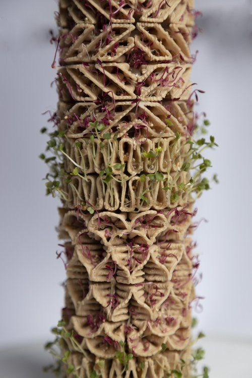
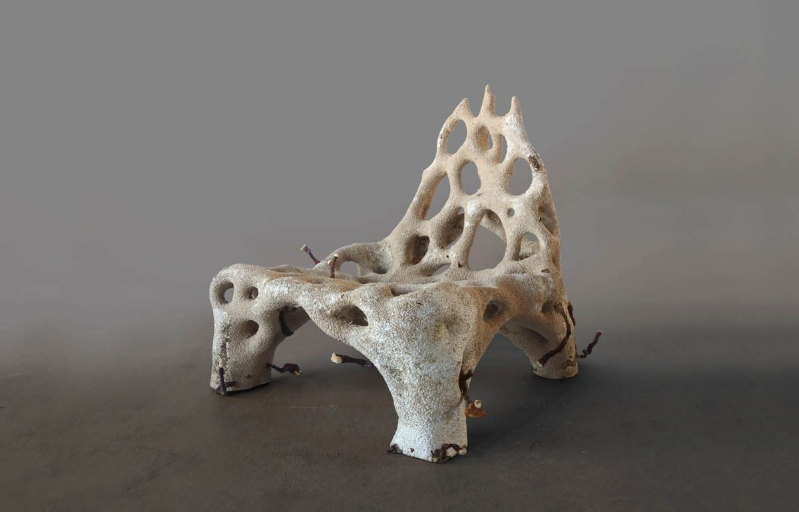

Me gustaría aprender formas de representación interactiva y reinterpretar datos de la naturaleza y el territorio.
Intereses
- Oficios y fabricación digital
- Ecología y materiales biobasados
- Fotografía y video
- Café de especialidad
Computación Avanzada
Arquitecta y fotógrafa. Dirijo un estudio de diseño y fabricación: hacemos prototipos, mobiliario y museografía.
Me gustaría aprender formas de representación interactiva y reinterpretar datos de la naturaleza y el territorio.
¿Cómo puede la tecnología asistir procesos biológicos en el diseño?
Arrastra para orbitar · Pellizca o usa la rueda para acercar
Tu navegador no pudo mostrar el modelo 3D. Descárgalo aquí.

